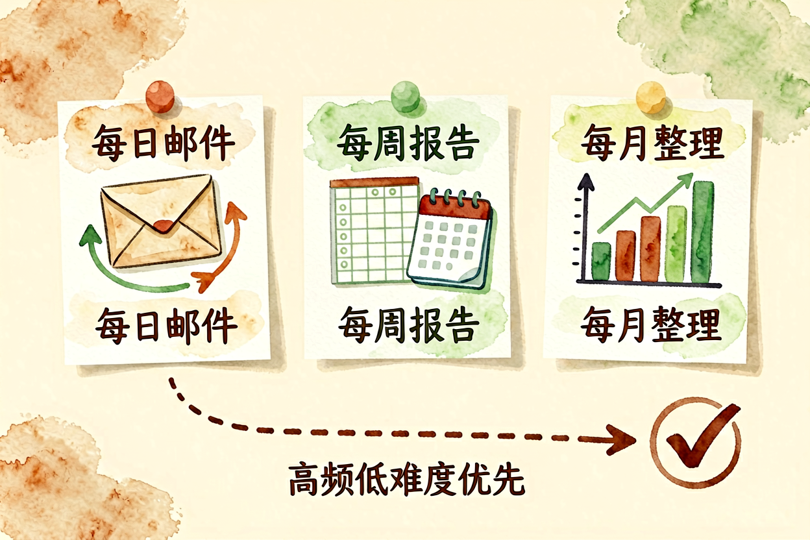
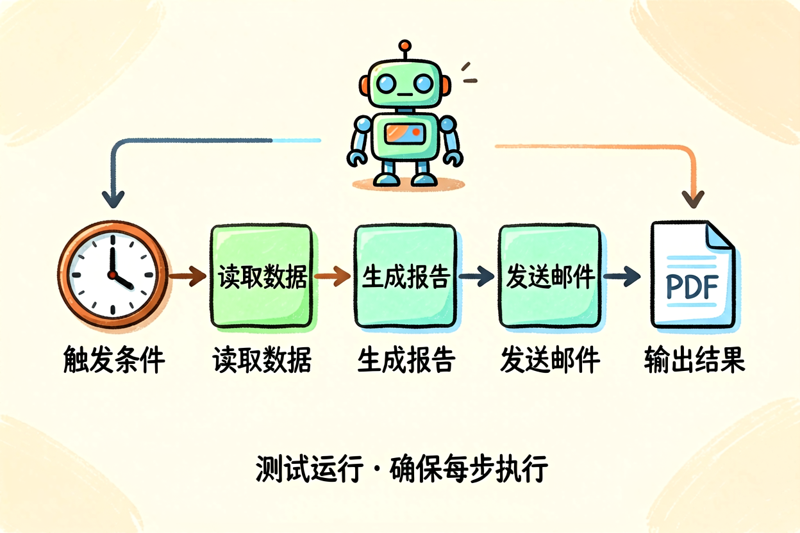
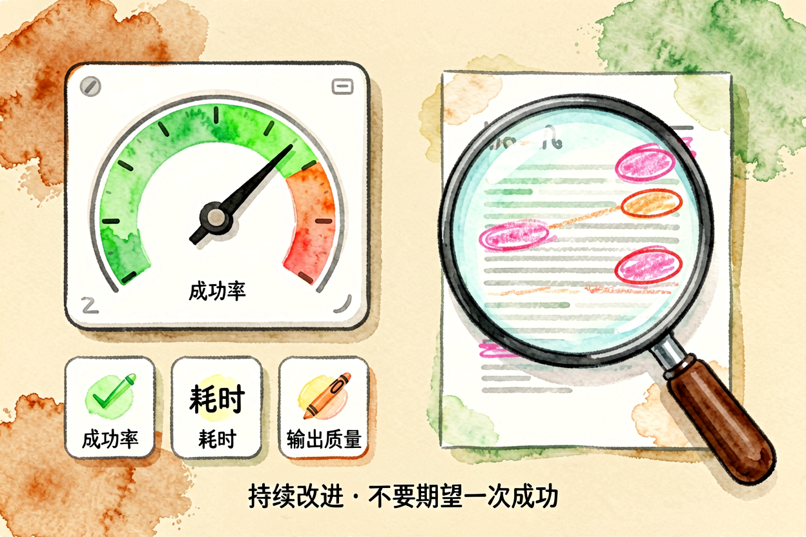
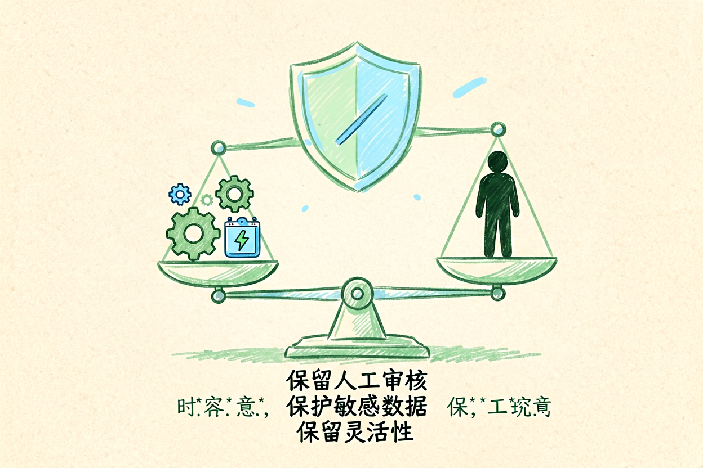
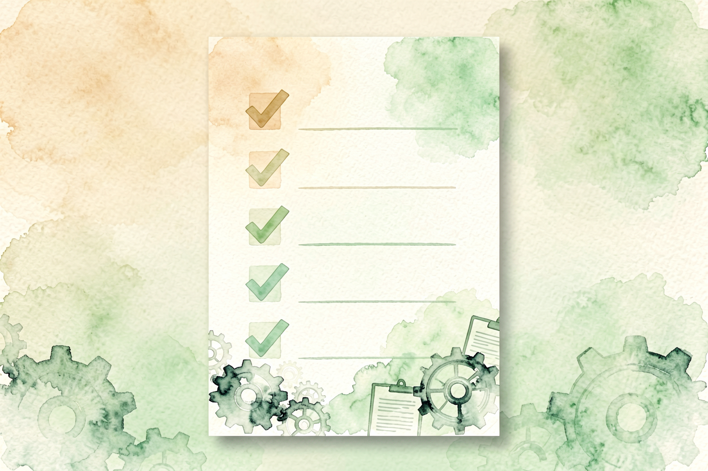

AI 办公自动化：职场人的效率提升指南
总在手动做同一件事？用 AI 办公自动化，把重复动作串成自动链，到点自己执行，你只管收结果。本文讲清六种高频场景的自动化方案。
AI办公自动化是本文的核心主题。 !配图1办公自动化全景
{kind=link}
AI办公自动化入门：把重复动作串成链
AI 办公自动化，是把「抓取、总结、转发、回复」这类固定动作串成一条链，设好触发条件让它定时自己跑。你不再每天手动做同一件事，只在对结果不满意时介入。和AI 工作流自动化里讲的逻辑一致，本文聚焦职场高频场景。
职场人预算有限，优先选免费工具，够用就行。自动化不是甩手，关键节点仍要你确认。先从一个小场景试，比想整套流程更稳。
AI办公自动化入门：邮件自动化处理

邮件自动化分三步：抓取、总结、分类。用 Zapier 或 Make 连接邮箱，设置触发条件（新邮件到达），让 AI 自动总结、分类、转发。
和AI 邮件自动化里讲的逻辑一致，别自动回复敏感邮件，重要邮件仍需人工确认。设置过滤规则，把垃圾邮件自动归类，只让重要邮件进收件箱。
AI办公自动化入门：会议纪要自动生成

会议纪要自动生成分三步：录音转写、提取要点、生成待办。用飞书妙记或腾讯会议，自动转写会议录音，再用 AI 提取要点、生成待办。
和AI 会议纪要工具里讲的逻辑一致，生成后人工扫一眼，确保人名、时间、任务没写错。时间格式统一成年月日，群里一眼能排进日程。
AI办公自动化入门：数据分析自动化

数据分析自动化分三步：导入数据、生成分析、输出报告。用 Python + Pandas 导入数据，用 AI 生成分析结论，用 AI 输出报告。
和AI 数据分析实战里讲的逻辑一致，先小样验证规则，规则写错会整列错，最好留一版原始数据备份。异常数据标红提醒，别直接忽略。
AI办公自动化入门：日报周报自动生成

日报周报自动生成分三步：收集数据、生成草稿、人工润色。用 Notion 或飞书收集每日工作数据，用 AI 生成草稿，人工润色后提交。
和AI 提升学习效率里讲的逻辑一致，别直接复制 AI 输出，要理解过程、掌握方法。周报告模板提前定好，AI 只负责填内容，不负责改结构。
AI办公自动化入门：常见误区与避坑

误区一：自动化一切不是所有事情都适合自动化，复杂决策、敏感沟通仍需人工。自动化只适合重复、固定、低风险的流程。
误区二：过度依赖工具工具是辅助，不是替代。别指望一键提效，要理解流程、掌握方法，工具只是执行者。
误区三：忽略失败处理自动化流程可能失败，要有兜底方案。某一步出错要有提醒，别让半截流程卡死。
关于 AI 办公自动化，核心经验是「先跑通，再优化」。别一上来就追求完美，先选一个高频场景跑通全流程，再逐步添加其他场景。
AI 办公自动化的关键是动手试。别看完就忘，当天就选一个场景开始配置，让操作成为习惯。用多了自然熟练。掌握 AI 办公自动化入门的技巧，效率会翻倍。

本文信息核对于 2026-09-07。AI 产品的价格、免费额度与功能变动频繁，实际以各工具官网当前说明为准。